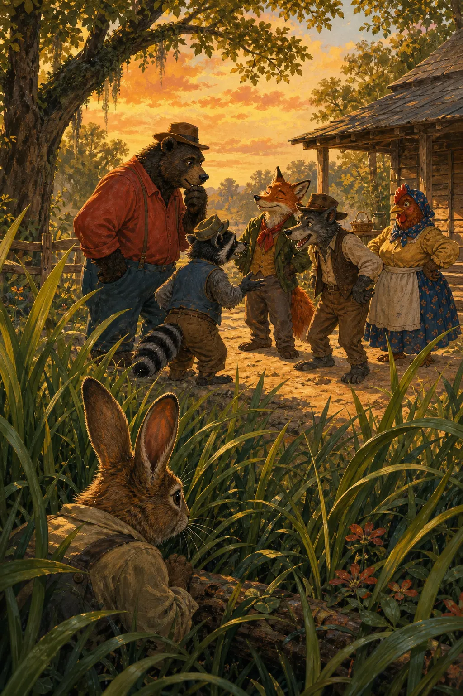
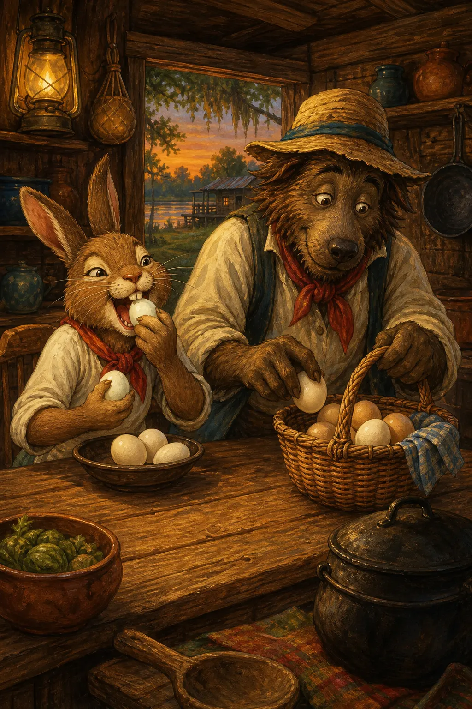

African diaspora trickster and folklore tales
Br’er Rabbit Stories
Recorded concern (ages 3–11) · Popularity: Very High · Read time: 5 min read
Characters: Br’er Rabbit, Br’er Fox +1
4 fairy tales
African diaspora trickster and folklore tales on Fairy Tales by Kamu: 4 tales for parents choosing classic stories for shared reading, with illustrations and online reading.

Recorded concern (ages 3–11) · Popularity: Very High · Read time: 5 min read
Characters: Br’er Rabbit, Br’er Fox +1

Assessed age: 9+ · Popularity: High · Read time: 5 min read
Characters: Anansi / Aunt Nancy

Assessed age: 9+ · Popularity: Medium · Read time: 7 min read
Characters: Compair Lapin, Bouki
Assessed age: 10+ · Popularity: Medium · Read time: 6 min read
Characters: Boo Hag